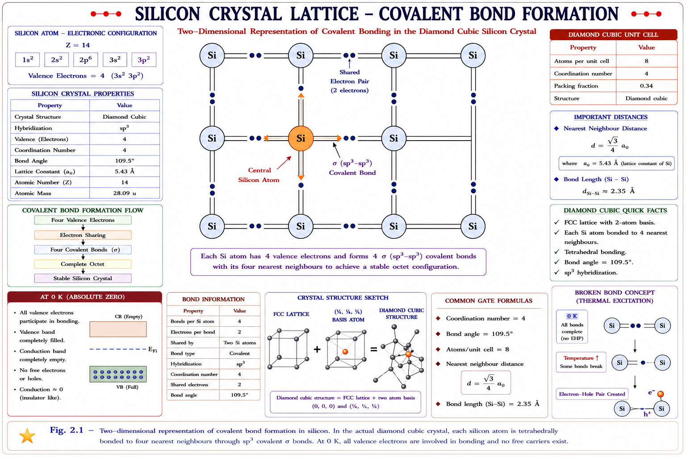
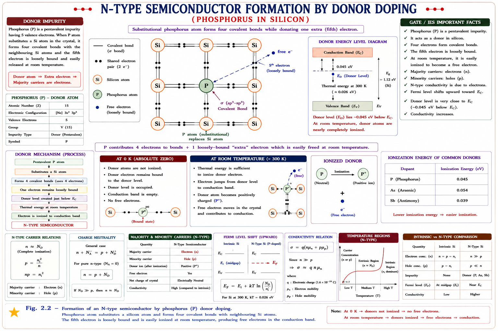
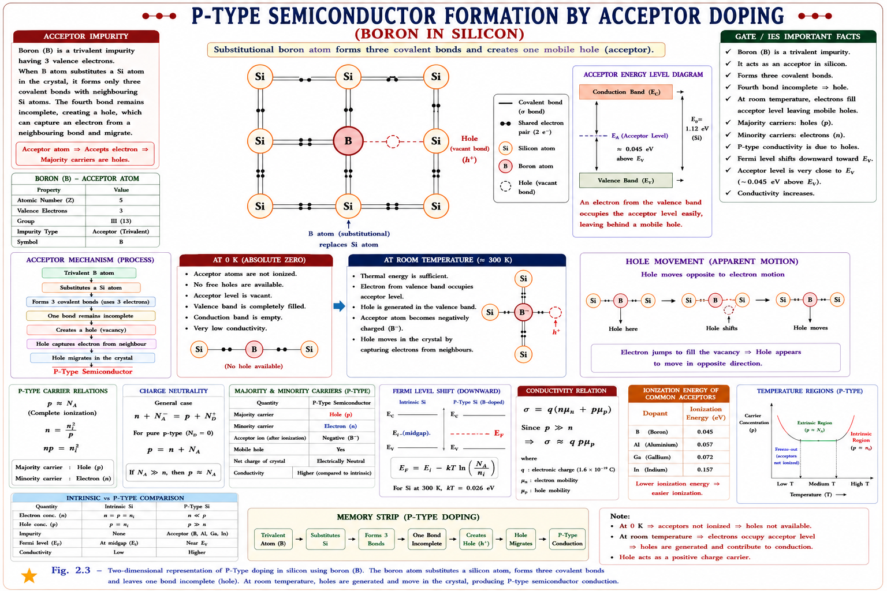
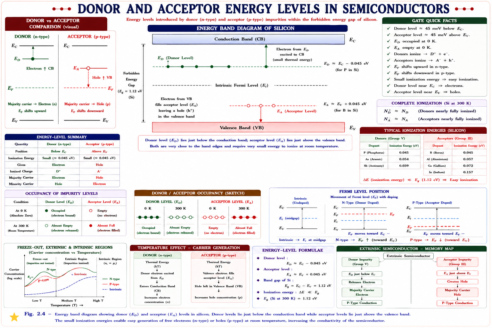
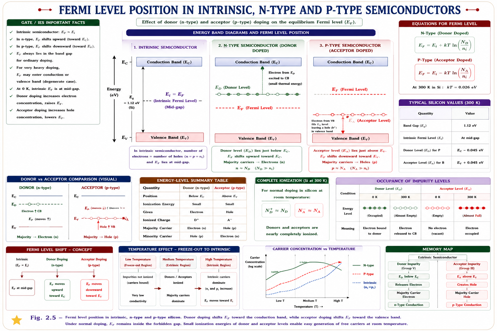

Pure semiconductors, the doping mechanism, N-type and P-type materials, donor and acceptor energy levels, carrier concentration laws, and the Fermi level — built from first principles with full derivations, solved numericals, and GATE/IES exam focus.
Why do we even need semiconductors? Conductors like copper have roughly 10²⁹ free electrons per cubic metre — far too many to control. Insulators like glass have almost none — fewer than 10⁷ per cubic metre — so no current flows no matter what we do. Electronics needed a third material whose carrier count could be controlled at will, turned up or down by a designer rather than fixed by nature. That material is the semiconductor, and silicon and germanium are its two practical workhorses.
A pure (undoped) semiconductor is called intrinsic. At absolute zero it behaves exactly like an insulator — every valence electron is locked into a covalent bond. Only when thermal energy is supplied does it start conducting at all. This temperature dependence is the single most important property that separates a semiconductor from a conductor, and it is exploited in thermistors, IC temperature sensors, and thermal runaway protection circuits.
Every diode, transistor, MOSFET, solar cell, and integrated circuit begins its story here. Before we can understand a p-n junction, we must understand what a pure semiconductor crystal looks like, and why it conducts so poorly until we deliberately ruin its purity through doping. This chapter builds that foundation — the intrinsic semiconductor — and then shows how adding a tiny, controlled amount of impurity (1 part in 10⁸ atoms is typical) transforms an almost-insulating crystal into a useful electronic material.
Silicon (atomic number 14) and germanium (atomic number 32) are both tetravalent — each atom has exactly four electrons in its outermost (valence) shell. In a crystal, every atom shares one valence electron with each of its four nearest neighbours, forming four covalent bonds arranged in a tetrahedral pattern. This repeating pattern is the diamond cubic lattice, the same structure as crystalline carbon (diamond).

2-D schematic of the diamond-cubic lattice. The real structure is 3-D tetrahedral; this flattened view shows the covalent-bond network conceptually.
Why does this happen? Heat agitates the lattice; some valence electrons gain
enough energy (\(\ge E_g\)) to break free of their bond and jump into the conduction band.
What if temperature increases further? More bonds break, carrier
concentration rises exponentially, and resistivity falls — opposite to a metal.
What if temperature → 0 K? No bonds break; the crystal becomes a perfect
insulator with zero free carriers.
What does an engineer observe? An intrinsic semiconductor's resistance drops
sharply on a hot day — this is exactly why early germanium devices needed heat-sinking and
careful thermal design.
When a covalent bond breaks due to thermal energy, it produces two carriers simultaneously: a free electron that escapes into the conduction band, and a "hole" — the vacancy left behind in the bond, which behaves as a positive charge carrier of its own. In a pure (intrinsic) semiconductor, electrons and holes are always generated in equal numbers, because every broken bond contributes exactly one of each.
A hole is not a real particle — it is the absence of an electron in a bond. But because a neighbouring electron can hop into that vacancy (leaving a new vacancy behind), the hole appears to move through the lattice like a positive charge. Treating it as a genuine carrier with its own effective mass and mobility is one of the most powerful simplifications in semiconductor physics.
Let n be the free-electron concentration (electrons per m³) and p be the hole concentration (holes per m³). For an intrinsic semiconductor, since carriers are created in pairs:
where ni is called the intrinsic carrier concentration — the number of electron-hole pairs per unit volume in a pure crystal at a given temperature. This is the most fundamental number in semiconductor physics; nearly every other carrier-concentration formula in this chapter and the next is built on top of ni.
From band theory (Fermi-Dirac statistics applied to the conduction and valence bands), the electron concentration in the conduction band and hole concentration in the valence band of an intrinsic semiconductor work out to:
Here Nc and Nv are the effective density of states in the conduction band and valence band respectively (they depend on the effective masses of electrons and holes and on temperature), Ec is the conduction-band edge, Ev is the valence-band edge, EF is the Fermi level, k is Boltzmann's constant, and T is absolute temperature. Multiplying the two expressions together eliminates EF completely — a very convenient result, because the Fermi level position is often the hardest quantity to pin down:
Since \(n = p = n_i\) for an intrinsic semiconductor, \(np = n_i^2\). Taking the square root gives the chapter's headline formula:
\(\sqrt{N_c N_v}\): a slowly-varying pre-factor set by the band structure
(\(\propto T^{3/2}\)
once effective masses are substituted) — it barely changes the overall picture.
\(e^{-E_g/2kT}\): the dominant term. It says that \(n_i\) depends
exponentially on the bandgap and on temperature — this single exponential is why
semiconductor conduction is so temperature-sensitive and why germanium (\(E_g = 0.72 \text{
eV}\)) has a
far larger \(n_i\) than silicon (\(E_g = 1.12 \text{ eV}\)) at room temperature, despite both
being group-IV elements.
What if \(E_g\) increases? \(n_i\) falls exponentially — a wide-bandgap
material like GaN or diamond is a far better insulator at room temperature than Si or Ge.
What if \(T \to \infty\)? \(n_i \to \sqrt{N_c N_v}\), the exponential term
tends to 1,
and the material starts behaving like a (poor) conductor.
What if \(E_g = 0\)? The formula collapses to \(n_i = \sqrt{N_c N_v}\) at all
temperatures — this describes a (gapless) conductor, not a semiconductor.
What does an engineer observe? Reverse leakage current in a diode (which is
proportional to \(n_i^2\)) roughly doubles for every 10 °C rise — this single formula
is the root cause of thermal runaway in poorly heat-sunk power semiconductor devices.
Students often write \(n_i \propto e^{-E_g/kT}\) (forgetting the factor of 2 in the denominator). The factor of 2 arises because \(n_i\) is a geometric mean of \(n\) and \(p\) — each individually depends on \(e^{-(\text{half-gap})/kT}\)-type terms measured from the Fermi level near mid-gap, and combining them through the square root halves the effective exponent. Always double-check whether a GATE question is asking for \(n_i\) or \(n_i^2\) before you drop or keep that factor of 2.
An intrinsic semiconductor at room temperature has a usable but small carrier concentration — roughly 1.5 × 10¹⁶ m⁻³ for silicon. That is far too low and far too temperature-dependent to build reliable devices. Doping is the deliberate, controlled introduction of impurity atoms into the crystal lattice to boost one type of carrier (electrons or holes) by many orders of magnitude, while making the resulting carrier concentration largely independent of temperature fluctuations near room temperature.
Without doping, every semiconductor device would behave identically — there would be no way to build a junction, no way to create asymmetric conduction, and therefore no diode, no transistor, no amplifier. Doping is the single manufacturing step that converts "a material that conducts a little" into "a material whose conduction we can engineer." A semiconductor that has been doped is called an extrinsic semiconductor.
Dopant atoms are chosen to be close in atomic size to silicon/germanium so they can fit into the lattice substitutionally — replacing a host atom at a regular lattice site rather than squeezing in between atoms (which is called interstitial doping and is generally undesirable). Two families of dopants are used:
| Dopant Family | Valence | Examples | Effect |
|---|---|---|---|
| Pentavalent (Group V) | 5 valence e⁻ | P, As, Sb, Bi | Donates 1 extra electron → N-type |
| Trivalent (Group III) | 3 valence e⁻ | B, Al, Ga, In | Creates 1 hole (accepts an electron) → P-type |
Typical doping levels range from 10¹⁵ to 10¹⁹ atoms/cm³ — that is roughly 1 dopant atom for every 10⁵ to 10⁸ host atoms. Despite being a vanishingly small fraction, this is enough to increase carrier concentration by 6–8 orders of magnitude over the intrinsic value, because each dopant atom contributes a carrier almost for free (very small ionisation energy) compared to the 1.12 eV needed to break a silicon covalent bond.
Why does this happen? A pentavalent atom has one more electron than needed
for the four covalent bonds; that electron is only weakly bound and detaches easily. A
trivalent atom has one fewer electron than needed, leaving one bond incomplete — a ready-made
hole.
What if doping concentration increases? Majority carrier concentration
rises roughly in proportion (until very high doping causes degeneracy effects), and the
material becomes more conductive and less temperature-sensitive.
What if we add both donor and acceptor atoms together? The material becomes
compensated — the net carrier type is decided by whichever dopant
concentration is larger.
When a pentavalent (Group V) impurity such as phosphorus, arsenic, or antimony is added to pure silicon, four of the dopant's five valence electrons form covalent bonds with the four neighbouring silicon atoms — exactly filling the lattice requirement. The fifth electron has no bond to join; it is held to its parent atom only by a weak electrostatic attraction and requires very little energy (~0.01–0.05 eV for Si) to break free into the conduction band.

Phosphorus (5 valence electrons) substitutes a silicon atom. Four electrons complete the covalent bonds; the fifth becomes a free, mobile electron.
Because each pentavalent atom donates a free electron to the crystal without creating a hole, it is called a donor atom. In an N-type material, electrons are the overwhelming majority carrier, and holes (still generated thermally in small numbers, exactly as they would be in the intrinsic crystal) are the minority carrier.
The label refers to the sign of the dominant mobile charge carrier (Negative — electrons), not to any net charge on the material. An N-type crystal is electrically neutral overall: every donor atom that releases a free electron becomes a fixed, immobile positive ion (ND⁺) embedded in the lattice, exactly balancing the negative mobile charge it released.
When a trivalent (Group III) impurity such as boron, aluminium, gallium, or indium replaces a host atom, it brings only three valence electrons — one short of the four needed to complete all covalent bonds with its neighbours. The result is one incomplete bond: a hole. This hole readily accepts an electron from a neighbouring bond (which requires very little energy), and the vacancy then appears to migrate through the lattice.

Boron (3 valence electrons) substitutes a silicon atom, leaving one covalent bond incomplete — a hole that can capture a neighbouring electron and migrate.
Each trivalent atom accepts an electron from a nearby bond to complete its own bonding requirement, which is why it is called an acceptor atom. In a P-type material, holes are the majority carrier and electrons (again generated thermally in pairs, as in the intrinsic case) are the minority carrier.
The label refers to the dominant carrier's charge sign (Positive — holes). Just like the N-type case, the crystal remains electrically neutral overall: each acceptor atom that captures an electron becomes a fixed, immobile negative ion (NA⁻), balancing the mobile positive charge (hole) it created.
A frequent GATE trap is assuming a hole is a positively charged "anti-electron" that exists independently in space. It does not — a hole only exists as a vacancy within the lattice's bonding structure. It cannot exist in vacuum, and its effective mass differs from a free electron's mass because it represents the collective response of the entire valence band, not a single particle.
Energy-band theory lets us go one step further than just saying "the fifth electron is loosely bound" — we can locate exactly where its energy state sits on the band diagram. Because the donor electron needs only a tiny ionisation energy (typically 0.01–0.05 eV for Si, against a 1.12 eV bandgap) to jump into the conduction band, its energy level ED must lie just below the conduction band edge Ec, inside what was previously the forbidden gap.
A simple hydrogen-atom-like model explains this well. The donor's extra electron orbits the fixed positive donor ion roughly the way an electron orbits a proton in hydrogen, except the surrounding semiconductor's high relative permittivity (εr ≈ 11.7 for Si) and the electron's much smaller effective mass inside the crystal both act to weaken the binding force enormously compared to a real hydrogen atom (13.6 eV). Plugging these factors into the Bohr-model ionisation-energy formula reduces 13.6 eV down to the experimentally observed tens of meV — comfortably less than thermal energy kT at room temperature (kT ≈ 0.026 eV), which is why donors are essentially fully ionised at room temperature.
What if temperature is extremely low (a few Kelvin)? Even the small donor
ionisation energy isn't available; donors remain un-ionised — this regime is called
freeze-out, and conductivity drops sharply.
What if temperature rises well above room temperature? Beyond a point, the
intrinsic generation (ni) starts to dominate over the fixed donor concentration —
this is the intrinsic regime, where the device starts behaving like an
undoped crystal again, a key reliability limit in power semiconductors.
By the same logic, an acceptor atom's empty bonding state — the level into which a valence electron can jump to create a hole — sits just above the valence band edge Ev, again well inside the forbidden gap. This level is called EA.

Donor levels lie a few tens of meV below the conduction band; acceptor levels lie a few tens of meV above the valence band — both deep inside what was the forbidden gap of the intrinsic crystal.
① Students sometimes place ED above Ec or EA below Ev — both are wrong; donor/acceptor levels always sit inside the gap, close to their respective band edge. ② Donor levels and acceptor levels are not symmetric around mid-gap by coincidence — their exact position depends on the specific dopant species (e.g., boron vs. indium in silicon sit at different depths). ③ Do not confuse "ionisation energy of donor" with "bandgap energy" — they differ by roughly a factor of 20–100.
The Fermi level EF is the energy at which the probability of finding an electron is exactly ½, according to Fermi-Dirac statistics. It is not necessarily an allowed energy state — it is a statistical reference level. Its position tells us, at a glance, what type of semiconductor we are looking at and how heavily it is doped — which is exactly why GATE and IES examiners love asking about it.
| Material | Fermi Level Position | Why |
|---|---|---|
| Intrinsic | Near mid-gap (slightly closer to \(E_c\) if \(m_h^* > m_e^*\)) | \(n = p\), so by symmetry of the density-of-states argument \(E_F\) sits close to \((E_c+E_v)/2\) |
| N-type | Moves up, toward \(E_c\) | More electrons available → higher occupation probability needed near \(E_c\) → \(E_F\) rises |
| P-type | Moves down, toward \(E_v\) | More holes (empty states) near \(E_v\) → \(E_F\) falls toward \(E_v\) |
| Heavily doped N-type | Can approach or enter conduction band | Degenerate semiconductor — used in ohmic contacts and tunnel diodes |

As doping shifts a semiconductor toward N-type, \(E_F\) moves up toward \(E_c\). As it shifts toward P-type, \(E_F\) moves down toward \(E_v\). The intrinsic Fermi level sits near mid-gap.
Combining the \(n\) and \(p\) expressions from Section 2.2 with \(n = N_D\) (N-type) gives the Fermi level measured from the conduction band edge:
Both expressions confirm the qualitative picture: as \(N_D\) (or \(N_A\)) increases, the logarithm term shrinks, pulling \(E_F\) closer to \(E_c\) (or \(E_v\)).
Why does this happen? Fermi level position directly encodes carrier
population: pushing \(E_F\) nearer a band means \(f(E)\) is higher for states in that band,
meaning
more carriers there.
What if doping increases without limit? \(E_F\) keeps
moving toward the band
edge and may even cross into the band — this is a degenerate semiconductor,
where simple Boltzmann approximations break down and full Fermi-Dirac statistics are
required.
What if temperature rises a lot in an extrinsic semiconductor? \(E_F\) drifts
back toward mid-gap as the material moves into the intrinsic regime — at very high \(T\), doped
and undoped material behave alike.
One of the most exam-critical relationships in semiconductor physics is the law of mass action: in thermal equilibrium, the product of electron and hole concentrations is a constant — equal to ni² — regardless of how heavily or in which direction the material is doped.
This law explains why heavy doping always suppresses the minority carrier rather than leaving it unaffected. If you dope a crystal to make n very large, p must fall in exact proportion to keep np fixed at ni². This is the physical reason a heavily doped diode's minority-carrier injection (and hence its reverse saturation current contribution from that side) is small — a fact used deliberately in asymmetric junction design for power diodes and solar cells.
A doped semiconductor must remain electrically neutral overall. Counting all fixed and mobile charges gives the charge-neutrality equation:
where ND⁺ is the concentration of ionised (positively charged) donor ions and NA⁻ is the concentration of ionised (negatively charged) acceptor ions. Combined with the mass-action law np = ni², this single equation lets us solve exactly for n and p in any doped semiconductor — including the practically important case where both donors and acceptors are present together (a compensated semiconductor).
① Writing n = ND exactly, even at very high temperature where ni is no longer negligible compared to ND — the approximation n ≈ ND is only valid when ND ≫ ni. ② Forgetting that np = ni² uses the intrinsic concentration of that same material at that same temperature — ni itself is temperature-dependent, so a numerical answer at 300 K cannot reuse an ni value computed at 400 K. ③ Confusing ND (donor atom concentration, a fixed doping density) with n (electron concentration, a carrier density) — they are only approximately equal when ionisation is complete and N_D ≫ n_i.
| Property | Intrinsic | N-Type | P-Type |
|---|---|---|---|
| Dopant | None (pure Si/Ge) | Pentavalent (P, As, Sb) | Trivalent (B, Al, Ga, In) |
| Majority carrier | n = p (equal) | Electrons | Holes |
| Minority carrier | — | Holes (\( = n_i^2/N_D \)) | Electrons (\( = n_i^2/N_A \)) |
| Impurity level | — | Donor level \(E_D\), just below \(E_c\) | Acceptor level \(E_A\), just above \(E_v\) |
| Ionisation energy | — | 0.01–0.05 eV (Si) | 0.01–0.06 eV (Si) |
| Fermi level | Near mid-gap | Shifts toward \(E_c\) | Shifts toward \(E_v\) |
| Crystal charge | Neutral | Neutral (fixed \(N_D^+\) balances mobile \(e^-\)) | Neutral (fixed \(N_A^-\) balances mobile holes) |
| Key formula | \(n_i = \sqrt{N_c N_v} e^{-E_g/2kT}\) | \(n \approx N_D, np = n_i^2\) | \(p \approx N_A, np = n_i^2\) |
Donor → Down near \(E_c\), gives extra electron (think: "5 is
more than 4, the extra one Donates and Drifts up to the conduction band").
Acceptor → Above \(E_v\), takes an electron (think: "3 is less
than 4, it Accepts one electron from below, leaving a hole behind").
A simple hand trick: hold up 5 fingers for pentavalent (donor, N-type, Negative carrier);
hold up 3 fingers for trivalent (acceptor, P-type, Positive carrier). The finger count
directly tells you the carrier type.
Since N_D ≫ n_i, almost all donors are ionised and essentially all free electrons come from donor atoms:
Apply the law of mass action to find the minority carrier (holes):
Answer: n ≈ 10²² m⁻³ (majority), p ≈ 2.25 × 10¹⁰ m⁻³ (minority) — note the hole concentration has fallen by 12 orders of magnitude below the intrinsic value, exactly as the mass-action law predicts for heavy donor doping.
Taking the ratio of the \(n_i\) formula at two temperatures and cancelling the slowly-varying pre-factor \(\sqrt{N_c N_v}\):
Compute the bracketed term:
Now substitute into the exponent:
Answer: raising temperature by just 50 °C increases n_i by roughly a factor of 22 — this dramatic exponential sensitivity is exactly why thermal runaway is such a serious concern in germanium and silicon power devices, and why modern power semiconductors increasingly use wide-bandgap materials like SiC and GaN.
Doping with a pentavalent impurity adds a large number of free electrons. Fermi-Dirac statistics require that, for \(f(E)\) (probability of occupation) to be consistent with this much larger electron population near the conduction band, \(E_F\) must move upward, toward \(E_c\) — only then does the occupation probability near \(E_c\) become large enough to match the new \(n\).
Simultaneously, because \(np = n_i^2\) must hold (mass-action law, a constant set only by temperature and the material), and \(n\) has increased sharply, \(p\) must decrease by exactly the same factor. So the rise in majority electrons and the fall in minority holes are two sides of the same physical statement — both are consequences of \(E_F\) moving toward \(E_c\).
These sub-topics appear consistently across GATE EC (Electronic Devices section) and IES E&T papers:
An intrinsic silicon sample is doped with a pentavalent impurity. As the doping concentration is increased further (keeping temperature constant), the Fermi level will:
Explanation: \(E_c - E_F = kT \ln(N_c/N_D)\). As \(N_D\) increases, the ratio \(N_c/N_D\) decreases, so the logarithm (and hence \(E_c - E_F\)) decreases — meaning \(E_F\) moves closer to \(E_c\), i.e., further toward the conduction band. This is consistent with the physical picture: more donor electrons require a higher Fermi level to match the larger electron population.
A silicon sample is doped with \(N_A = 5 \times 10^{21} \text{ m}^{-3}\) acceptor atoms. If \(n_i = 1.5 \times 10^{16} \text{ m}^{-3}\) at 300 K, the minority carrier (electron) concentration is approximately:
Explanation: Since \(N_A \gg n_i\), \(p \approx N_A = 5 \times 10^{21} \text{ m}^{-3}\). Using the mass-action law: \(n = n_i^2/p = (1.5 \times 10^{16})^2 / (5 \times 10^{21}) = 2.25 \times 10^{32} / (5 \times 10^{21}) = 4.5 \times 10^{10} \text{ m}^{-3}\). Option (D) is a common trap — it is \(n_i^2\) itself, not divided by \(p\).
The donor energy level in an N-type semiconductor is located:
Explanation: The donor level \(E_D\) sits a small ionisation energy (\(\Delta E_D\), typically 0.01–0.05 eV in silicon) below the conduction band edge \(E_c\) — not at it, and not at mid-gap. Option (D) describes the acceptor level, not the donor level — a classic IES distractor pairing.
Stuck on carrier concentration, Fermi level direction, or a doping numerical? Ask directly.
Pure Si/Ge, tetravalent, diamond-cubic lattice. \(n = p = n_i\). At 0 K behaves as insulator; carriers appear only via thermal bond-breaking, generated in electron-hole pairs.
Substitutional introduction of pentavalent (donor) or trivalent (acceptor) impurities at ~1 part in 10⁵–10⁸. Converts intrinsic material into extrinsic (N-type or P-type).
N-type: donor atoms, majority = electrons, \(p = n_i^2/N_D\). P-type: acceptor atoms, majority = holes, \(n = n_i^2/N_A\). Crystal remains electrically neutral overall in both cases.
\(E_D\) lies just below \(E_c\) (\(\Delta E_D \approx 0.01\text{--}0.05\text{ eV}\)). \(E_A\) lies just above \(E_v\) (\(\Delta E_A \approx 0.01\text{--}0.06\text{ eV}\)). Both fully ionised at room temperature; freeze-out occurs at very low \(T\).
\(n_i = \sqrt{N_c N_v} e^{-E_g/2kT}\). Exponential dependence on \(E_g\) and \(T\) — small bandgap or high temperature both sharply increase \(n_i\). \(np = n_i^2\) always holds (mass-action law).
Intrinsic: near mid-gap. N-type: shifts toward \(E_c\) as \(N_D\) rises. P-type: shifts toward \(E_v\) as \(N_A\) rises. \(E_c - E_F = kT \ln(N_c/N_D)\); \(E_F - E_v = kT \ln(N_v/N_A)\).
The P-N Junction Diode — formation of the depletion region, built-in potential, forward and reverse bias behaviour, the diode current equation, junction capacitance, and breakdown mechanisms (Zener and avalanche), with complete GATE & IES concepts.
All technical content is derived from the following standard textbooks and learning resources. All explanations, derivations, diagrams and examples are original to Aarova AI.